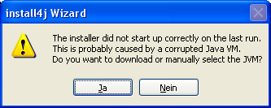
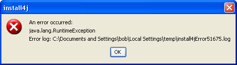

Error Handling


Error Handling |
|

If the user chooses manual location or download, the same dialog will be displayed as for in the failure to find a JRE.

The download option is only available if a JRE has been dynamically bundled in the Bundled JRE step of the media file wizard. A JRE that has been located or downloaded in this way will also be used by your installed application.
On Windows, when an installer is executed it always generates a log file in the temp directory that contains information about the JRE search sequence and can be used for debugging purposes. The name of the log file starts with i4j_nlog_. If you have a problem with JRE detection or the installer startup, please send this log file along with your support request.
It is also possible to generate this log for the JRE detection of the generated Windows launchers. In order to switch on logging, please define the environment variable INSTALL4J_LOG=yes and look for the newest text file whose name starts with i4j_nlog_ in the temp directory.
If an exception is thrown in the installer, it prepares an error log and informs the user about its location

You can force the installer to print exceptions to stderr for debugging purposes with the -Dinstall4j.debug=true command line option.
Additionally, all installers and uninstaller generate an installation log that can be used for debugging purposes. After a successful installation it is located in [installation dir]/.install4j/installation.log. For uninstallation or if the end of the installation cannot be reached, you can find it in your temp directory if you pass -Dinstall4j.keepLog=true to the installer or uninstaller. The file is prefixed i4j_log. If you would like the installer to log to stderr as well, you can pass -Dinstall4j.logToStderr=true to the installer. Both arguments can also be useful for debug installers and uninstallers, where they have to be passed as VM parameters.
You can define the error handling for every installation or uninstallation action separately. Please find more information in the Screens and Actions help topic.
The process of an installer returns 0 if the installation was completed successfully, 1 if the installation fails and 83 if the installer could not find a suitable JVM to run. These exit codes are especially useful to check the result of an unattended installer run.
|
|